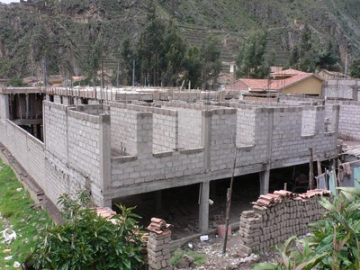
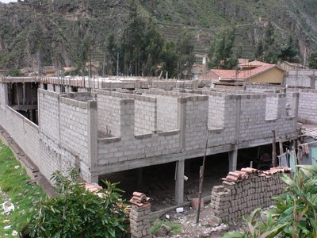

Bloques de concreto, sólidos [CBS]
Bloques de hormigón con menos de 30% de los agujeros (cavidades ).

Bloques de concreto, solido, Peru (A. Charleson)
Bloques de hormigón con menos de 30% de los agujeros (cavidades ).

Bloques de concreto, solido, Peru (A. Charleson)